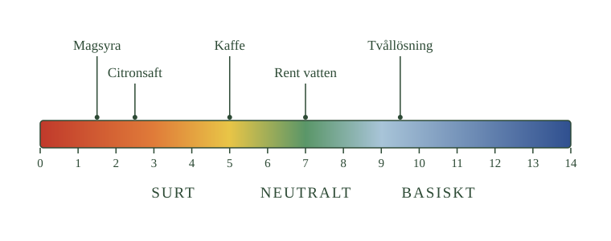

- Basiska lösningar har pH över 7
- Ju fler hydroxidjoner, desto högre pH
- Fler hydroxidjoner betyder färre vätejoner
- BTB blir blått i en basisk lösning
- Samma skala som för syror, andra änden
Du kan redan pH-skalan från syrorna. Nu ska vi bara flytta oss till andra sidan av den.
Över 7
En basisk lösning har pH över 7. Ju mer basisk lösningen är, desto högre är talet.
Det är spegelbilden av det du lärde dig om syror. Där gällde att ju fler vätejoner, desto lägre pH. Här gäller att ju fler hydroxidjoner, desto högre pH.
En tvållösning ligger ofta runt pH 9 eller 10. Propplösare kan ligga över 13, och det är en av anledningarna till att den är så farlig.
- Var på skalan tvållösningen ligger
- Hur långt från 7 den ligger jämfört med citronsaften
- Åt vilket håll lösningarna blir mer basiska

De två jonerna hänger ihop
Här finns något som är värt att tänka igenom.
I en lösning finns alltid både vätejoner och hydroxidjoner. I rent vatten finns lika många av varje.
Tillsätter du en bas ökar antalet hydroxidjoner. Men samtidigt minskar antalet vätejoner — de reagerar med de nya hydroxidjonerna och bildar vatten.
De två talen rör sig alltså alltid åt motsatta håll. Blir det fler av det ena blir det färre av det andra.
Det betyder att man kan beskriva samma sak på två sätt: en basisk lösning har många hydroxidjoner, eller så har den få vätejoner. Båda stämmer.
Att se det
För att se om en lösning är basisk kan du använda samma indikatorer som förut.
BTB blir blått i en basisk lösning. Rött lackmuspapper blir blått. Rödkålsindikator går mot blått och grönt.
En pH-mätare visar förstås talet direkt.
- Vilket pH har en basisk lösning?
- Vad händer med oxoniumjonerna när hydroxidjonerna ökar?
- Vad betyder hakparentesen i en formel?
- Hur ser sambandet ut i neutralt vatten?
- Vilken indikator visar basiskt?
pH över 7 betyder basisk
pH-skalan används för att beskriva hur sur eller basisk en vattenlösning är.
En basisk lösning har pH över 7. Ju större överskott av hydroxidjoner lösningen har, desto högre blir pH.
De två jonerna hänger ihop
Samtidigt minskar mängden oxoniumjoner, \(\ce{H3O+}\). Mängden oxoniumjoner och hydroxidjoner hänger nämligen ihop: de reagerar med varandra och bildar vatten, så ökar den ena minskar den andra.
Hakparentes betyder koncentration
Ett vanligt sätt att skriva en koncentration är att sätta ämnet inom hakparentes. [\(\ce{OH-}\)] betyder alltså koncentrationen av hydroxidjoner.
I neutralt vatten är de lika stora
I neutralt vatten är de två koncentrationerna lika stora:
[\(\ce{H3O+}\)] = [\(\ce{OH-}\)]
I en basisk lösning gäller i stället:
[\(\ce{OH-}\)] > [\(\ce{H3O+}\)]
Ju större skillnaden blir, desto mer basisk är lösningen.
BTB blir blått
En syra-basindikator kan användas för att visa om en lösning är basisk. BTB, bromtymolblått, blir blått i basiska lösningar.
Hur hårt de hänger ihop
Standardtexten säger att koncentrationerna hänger ihop. Sambandet är exakt, och det är värt att se.
I vattenlösning gäller alltid vid 25 °C:
[\(\ce{H3O+}\)] · [\(\ce{OH-}\)] = \(10^{-14}\)
Multiplicerar man de två koncentrationerna får man samma tal, oavsett vad man tillsatt. Det betyder att om den ena tiofaldigas måste den andra bli en tiondel.
I rent vatten är båda \(10^{-7}\), och \(10^{-7}\) gånger \(10^{-7}\) blir \(10^{-14}\). Det är därför neutralt ligger just vid pH 7.
En basisk lösning med pH 11 har oxoniumjonkoncentrationen \(10^{-11}\). Hydroxidjonkoncentrationen måste då vara \(10^{-3}\), eftersom \(10^{-11}\) gånger \(10^{-3}\) blir \(10^{-14}\).
pOH
Eftersom hydroxidjonerna är lika intressanta som oxoniumjonerna finns ett mått för dem också.
pOH fungerar precis som pH, fast för hydroxidjoner. En lösning med hydroxidjonkoncentrationen \(10^{-3}\) har pOH 3.
Och eftersom produkten alltid är \(10^{-14}\) följer ett enkelt samband:
pH + pOH = 14
En lösning med pH 11 har alltså pOH 3. En med pH 3 har pOH 11. I rent vatten är båda 7.
Var noga med vad som adderas. Det är inte koncentrationerna som blir 14 — det är pH och pOH.
Varför gränserna inte är absoluta
Skalan brukar ritas från 0 till 14, och för vanliga lösningar räcker det.
Men talen är inte gränser i sig. En mycket koncentrerad stark syra kan ha pH under 0, och en mycket koncentrerad stark bas kan ha pH över 14. I praktiken förekommer värden omkring −1 och 15.
Vid så höga koncentrationer fungerar dock inte de enkla sambanden lika bra, och skalan ska därför inte tänkas som en linjal som fortsätter obegränsat åt båda hållen.
Om modellen: standardtexten säger att de två jonerna hänger ihop. Med jonprodukten blir det mätbart — och pH-skalans mittpunkt och längd faller ut som en konsekvens i stället för att vara något man måste memorera.
- Styrka och koncentration är två olika saker, precis som hos syror
- Fyra kombinationer: stark/svag × koncentrerad/utspädd
- Späder man en bas sjunker pH mot 7
- Basen blir inte svagare av att spädas
- Starka baser utvecklar värme när de löses — häll basen i vattnet
Nu kommer samma skillnad som hos syrorna, och den är lika viktig här.
Två olika saker
Stark och svag beskriver hur fullständigt basen ger hydroxidjoner. Det är en egenskap hos ämnet, och den ändras aldrig.
Koncentrerad och utspädd beskriver hur mycket bas som finns i lösningen. Det kan du ändra genom att hälla i mer vatten.
Eftersom de är oberoende kan de kombineras fritt, precis som hos syrorna:
- stark och koncentrerad
- stark och utspädd
- svag och koncentrerad
- svag och utspädd
Natriumhydroxid är en stark bas. Men häller du en nypa i en hink vatten är lösningen utspädd, och den kan ha ganska måttligt pH.
Ammoniak är en svag bas. Men en ammoniaklösning kan ändå vara koncentrerad om den innehåller mycket ammoniak per liter.
Att späda ut
När du tillsätter vatten till en basisk lösning fördelas hydroxidjonerna i mer vätska. Det går alltså färre hydroxidjoner på varje liter.
Koncentrationen minskar, och pH sjunker mot 7. Lösningen blir mindre basisk.
Men lägg märke till vad som inte hänt. Basen har inte blivit svagare. En stark bas är precis lika stark efter utspädningen — det finns bara mindre av den per liter.
Det är exakt samma resonemang som när du spädde ut en syra, fast åt andra hållet på skalan.
Säkerhet vid utspädning
Starka baser kan utveckla mycket värme när de löses i vatten. Natriumhydroxid är värst — fast natriumhydroxid som möter vatten blir hett snabbt.
Därför gäller samma princip som med syror. Tillsätt basen till vattnet, lite i taget, och rör om. Häll aldrig en liten mängd vatten på en stor mängd fast eller koncentrerad bas — då hettar den lilla vattenmängden upp sig så fort att den kan koka och stänka.
Skyddsglasögon ska alltid användas när du arbetar med starka baser. Ögon är det som skadas allvarligast.
- Vilka fyra kombinationer finns?
- Kan en stark bas vara utspädd?
- Vad händer med pH vid utspädning?
- Blir basen svagare?
- Varför måste utspädning göras försiktigt?
Styrka och koncentration ger fyra kombinationer
När man beskriver en bas måste man hålla isär två olika egenskaper: styrka och koncentration.
En bas kan vara:
- stark och koncentrerad
- stark och utspädd
- svag och koncentrerad
- svag och utspädd
En stark bas kan vara utspädd
Natriumhydroxid är till exempel en stark bas. Men om en mycket liten mängd natriumhydroxid finns i en stor mängd vatten är lösningen utspädd.
En svag bas kan vara koncentrerad
Ammoniak är en svag bas. Men en ammoniaklösning kan ändå vara koncentrerad om den innehåller mycket ammoniak per liter.
Vid utspädning sjunker pH mot 7
När en basisk lösning späds med vatten minskar koncentrationen av hydroxidjoner. Det finns då färre hydroxidjoner per liter lösning.
Därför sjunker pH-värdet och närmar sig 7.
Men basen blir inte svagare
Lösningen blir alltså mindre basisk, men själva basen har inte blivit svagare. En stark bas är fortfarande en stark bas även när den späds ut.
Starka baser utvecklar värme
Starka baser kan utveckla mycket värme när de löses i vatten. Detta gäller särskilt natriumhydroxid.
Därför tillsätts basen till vattnet
Därför måste utspädning ske försiktigt. Basen tillsätts gradvis till vatten under omrörning. Man ska inte hälla en större mängd vatten direkt på koncentrerad eller fast stark bas, eftersom kraftig värmeutveckling kan göra att vätskan börjar koka eller stänka.
Skyddsglasögon ska alltid användas när man arbetar med starka baser.
Varför pH aldrig når 7 vid utspädning
Samma sak gäller som för syror, men åt andra hållet.
Späder du en basisk lösning tio gånger sjunker pH ett steg. Tio gånger till, ett steg till. Men fortsätter du bortom pH 8 börjar vattnets egna joner ta över.
Rent vatten har hydroxidjonkoncentrationen \(10^{-7}\). När basens eget bidrag närmar sig den nivån blir vattnets egna joner dominerande, och pH planar ut strax över 7.
En basisk lösning kan alltså aldrig bli sur genom utspädning — bara alltmer nära neutral.
Varför natriumhydroxid blir så hett
Standardtexten säger att natriumhydroxid utvecklar mycket värme. Förklaringen mötte du i repetitionsavsnitt 5.
När ett ämne löses sker tre saker: bindningarna i ämnet bryts, vätebindningar mellan vattenmolekyler bryts, och nya bindningar mellan vattenmolekyler och joner bildas. De två första kostar energi, den tredje frigör energi.
För natriumhydroxid frigör det tredje steget betydligt mer än de två första kostar. Överskottet blir värme, och eftersom natriumjonen och hydroxidjonen båda är små och kraftigt hydratiserade blir överskottet stort.
En koncentrerad natriumhydroxidlösning kan bli över 50 grader varm när den bereds — utan att någon värmt den.
Därför gäller samma regel som SIV
Principen är identisk med syrornas SIV-regel, och den bygger på vattnets värmekapacitet.
Häller du basen i mycket vatten fördelas energin i en stor vattenmängd, och temperaturen stiger måttligt. Häller du vatten på fast bas frigörs samma energi i den lilla vattenmängd som just tillsatts, och den kan koka omedelbart.
Skillnaden mot syror är att fast natriumhydroxid dessutom drar åt sig fukt ur luften. Lämnar du burken öppen blir pelletsen klibbiga och börjar lösa sig i sin egen upptagna fukt.
Om modellen: standardtexten ger en säkerhetsregel. Med energiresonemanget blir den en följd av vad upplösning är — och samma princip förklarar både syrornas och basernas hantering.
Laddar övningskort…
Laddar frågor ...